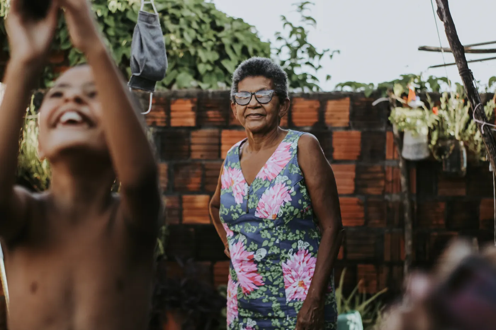
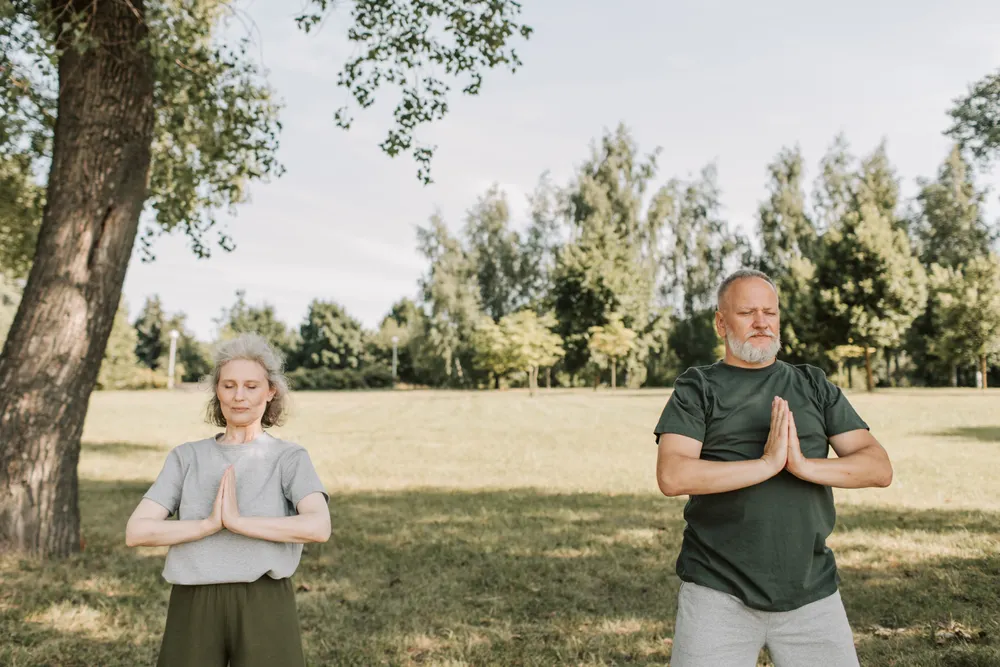

The same person
You are not starting again with a stranger every visit.
One nurse follows your case, which means the second appointment starts where the first one ended instead of at the beginning.

About
The practice's own words. This page is what they mean.
Why this exists
InsureSPR Health is a bone and muscle health practice in Randburg. Its stated belief is simple: strong bones and strong muscles are what make confident, independent living possible.
Falls that lead to fractures can take that independence away quickly and permanently. A broken hip at seventy is not an inconvenience — it is often the moment someone stops driving, stops cooking for themselves, stops living alone.
Both of the things standing between a stumble and that outcome — bone strength and muscle mass — can be measured. Both can be improved. Neither one improves on its own, and neither one announces that it is disappearing.
The idea
Most of us judge our health by two numbers that are barely worth having.
What the bathroom scale says, and whether anything hurts today.
Weight mixes muscle, fat, bone and water into one figure and tells you nothing about the balance between them. And pain is a late signal — bone loss causes none at all until something breaks.
Healthspan
The years you stay well — not simply the years you stay alive. The practice's phrase for this is "don't outlive your health", and extending that span is the whole point of measuring any of it.
How it works
The practice describes its osteoporosis care as nurse-led. That is not a technicality — it changes what the appointment feels like.
You are not starting again with a stranger every visit.
One nurse follows your case, which means the second appointment starts where the first one ended instead of at the beginning.

Your results get talked through, not posted to you.
A number nobody explains is just anxiety with a decimal point. Questions are expected — that is what the appointment is for.

Measuring is the start, not the service.
Mobility work, balance, breathing, coaching — the hands-on side that turns a reading into an actual change.
Who we serve
Screening, diagnosis and osteoporosis management, alongside the doctors already treating the patient.
Performance optimisation and injury prevention, built on real body composition rather than a scale reading.
Personal data about your own body, and someone to explain what it means for you.
About this website
This site is a design concept, built by Phuture Digital. InsureSPR Health is a real practice in Randburg with its own live website. We were not commissioned to make this, and the practice has not reviewed or approved it.
The practice publishes genuinely useful information, and it is written the way clinicians write. "DXA bone density and body composition analysis" is precise and correct, and it is also the reason someone closes the tab. We wanted to show what the same content looks like when every clinical term is kept but paired with the sentence a person actually needs.
Every photograph here is licensed stock, credited in the project notes. None of these people work at the practice, and none of them are its patients. No image is presented as being of the practice, its staff or its equipment.
Everything written here is general information for a design concept. It has not been reviewed by a clinician and it is not a substitute for advice from a qualified healthcare professional who knows your history.
If you want the practice's own information, go to their actual website or call them on 083 450 7861.

A confident movement for life
Phuture Digital · Concept work
Each of these is a complete site we designed and built to show what the finished thing looks like before anyone commits. Have a look at the others.
 Khanya Dental Studio
Dental practice
View concept →
Khanya Dental Studio
Dental practice
View concept →
 Hamba Freight
Last-mile logistics
View concept →
Hamba Freight
Last-mile logistics
View concept →
 UMSUKA Collection
Boutique hospitality
View concept →
UMSUKA Collection
Boutique hospitality
View concept →
 THATHA
Micro-retail units
View concept →
THATHA
Micro-retail units
View concept →
 Africrest
Built-to-rent property
View concept →
Africrest
Built-to-rent property
View concept →
Concept redesign. InsureSPR Health is a real practice. This is Phuture Digital’s own take on their site, built to demonstrate design and build work. It is not their official site, is not affiliated with them, and nothing here is medical advice.